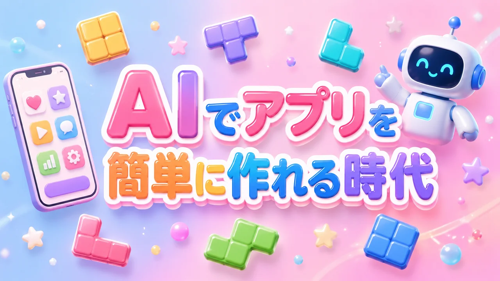
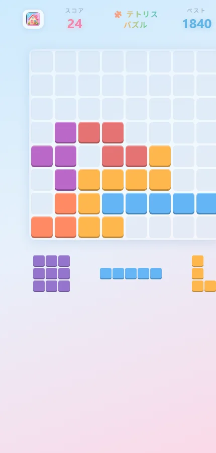
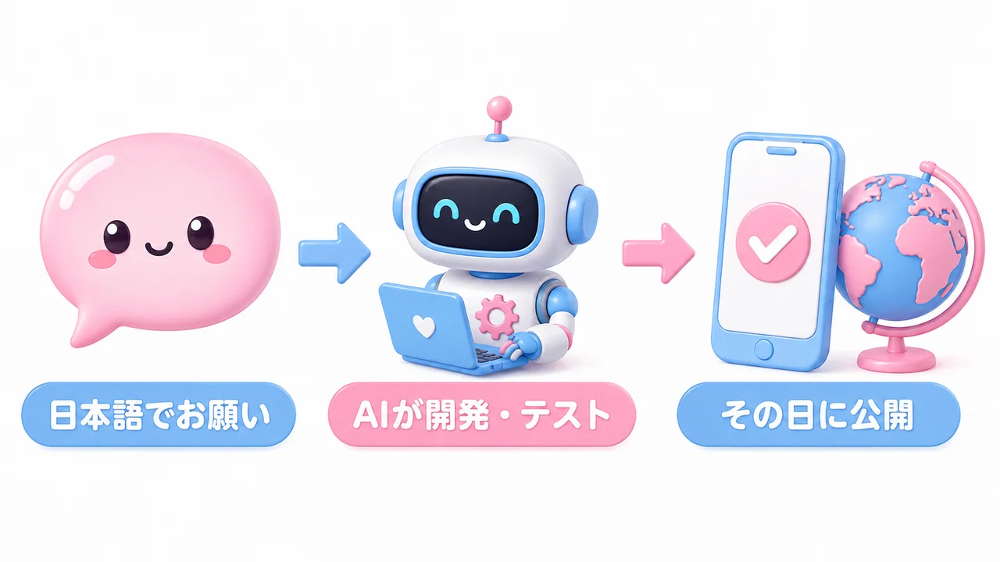

AIに「テトリスみたいなパズル作って」と頼んだら、その日のうちにスマホゲームが公開された話

「アプリを作る」と聞くと、どんなイメージがあるでしょうか。
プログラミングを何年も勉強して、専門のソフトを使いこなして、何ヶ月もかけて開発する——。少し前まで、それが常識でした。
でも今は違います。日本語でお願いするだけで、その日のうちにスマホで遊べるゲームが世界に公開できる時代になりました。今日は、私が実際にAIとゲームを作った一部始終をお見せします。
きっかけは、ふとした思いつき
ある日、AI（Claude）にこんなお願いをしてみました。
テトリスパズルのゲームを作成して。テトリスのような様々な形のブロックがあって、落ちてくるんじゃなくて、パズルを組み合わせていく。8×8のマスの中にドラッグして当てはめていく。縦1列もしくは横1列が揃ったら、その列は消える。スマホアプリをイメージしています。
思いついたままの、ふわっとした説明です。仕様書もなければ、設計図もありません。
ところが数分後、AIは完全に動くゲームを作り上げてきました。しかも自分で画面を操作してテストプレイまで済ませて、「ライン消去も、ゲームオーバーも、スコア保存も動作確認済みです」という報告つきです。

8×8の盤面に、下からブロックをドラッグして配置。縦か横の1列が揃うとシュッと消えて得点になる。コンボやスコアのアニメーションまで、最初から入っていました。
「公開して」と言ったら、本当に公開された
次にお願いしたのはこの一言です。
GitHubにアップロードして、Webアプリとして一般公開したい
すると、AIはコードの置き場所（GitHub）への登録から、Webサイトとしての公開設定までを自動で進めて、数分後にはURLが発行されました。
スマホでもパソコンでも、ブラウザでこのURLを開くだけ。アプリストアの審査もインストールも不要です。ソースコードもすべてGitHubで公開しています。
この間、私が書いたコードは0行

強調したいのはここです。ここまでで私がやったことは、
- 作りたいものを日本語で説明した
- 「公開して」とお願いした
この2つだけ。プログラムは1行も書いていませんし、専門用語もほぼ使っていません。「テトリスみたいな」「スマホアプリをイメージ」——そんな伝え方で通じるのです。
もちろん、AIが書いたコードが本当に正しく動くのかは気になるところですが、そこも心配いりません。AIは自分でゲームを何十手もプレイして、ブロックの配置・列の消去・ゲームオーバー・リスタートまで確認してから「できました」と言ってきます。作るだけでなく、テストまでAIがやる。これが2026年の開発風景です。
「作れる人」の定義が変わった
このゲーム、実はここからどんどん進化します。パステルカラーへの模様替え、ホーム画面に追加できる本格アプリ化、タイムアタックなどの新モード、成績グラフ……。すべて「日本語のお願い」だけで実現しました。その様子は第2回で詳しく紹介します。
アプリを作れるのは、もうプログラマーだけではありません。「何を作りたいか」を言葉にできる人なら、誰でも作れる。そんな時代が、もう来ています。